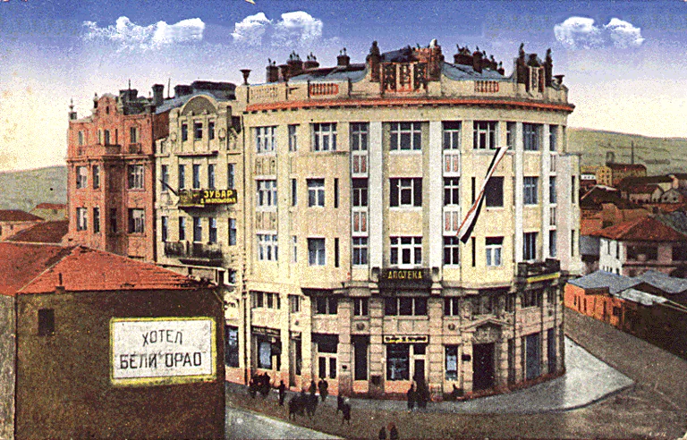
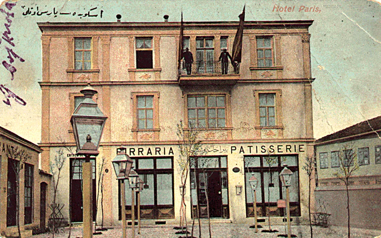
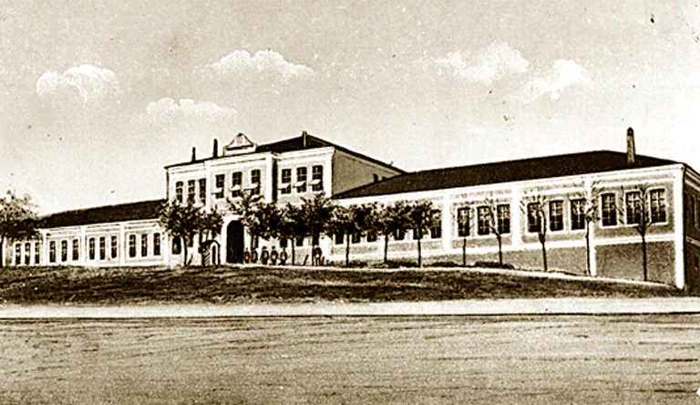
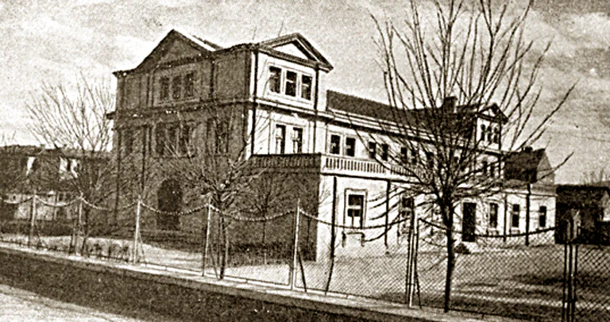
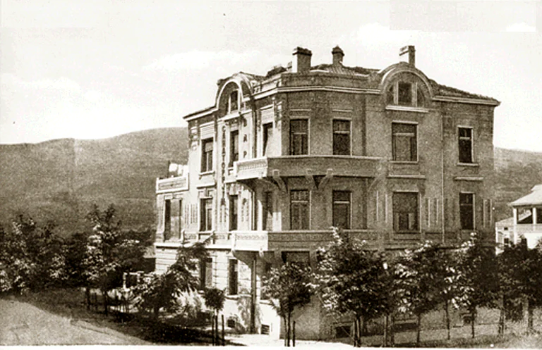
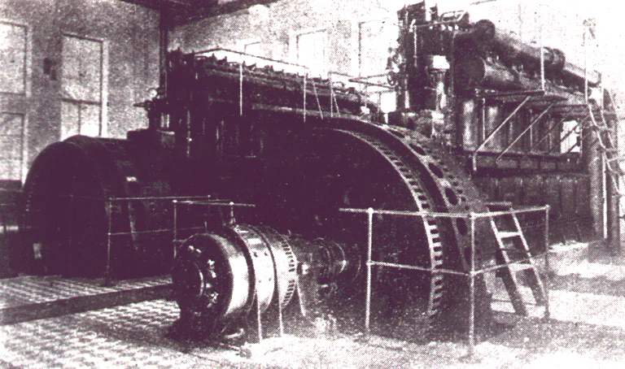
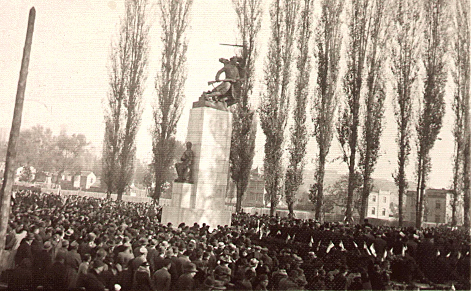
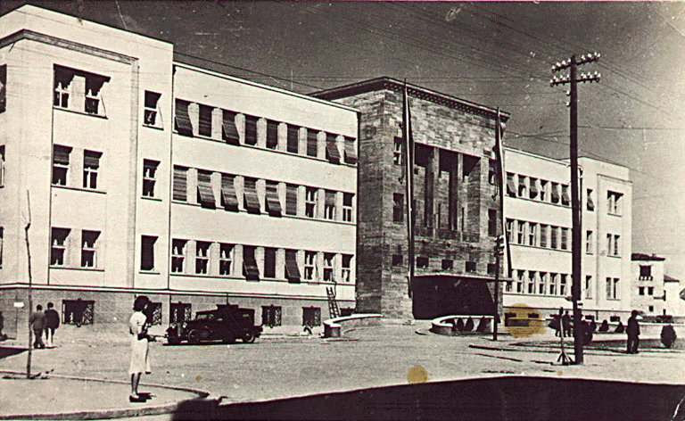
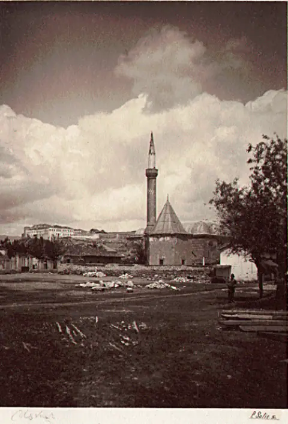

Скопье 1916 - 1917 панорама 1
Документы Балканских войн
- Год
- 1916-1917
- Продолжительность
- 00:11

Гостиница «Турати». Построена в конце XIX века.

Снимок сделан со здания старого вокзала - нынешнего Музея города Скопье, построенного в 1873 году во времена Османской империи. На переднем плане подход к вокзалу с огороженными зелёными участками. Далее главная улица, ведущая к площади. В начале улицы слева гостиница «Россия».

Вид на главную улицу «Македония». Арка поставлена в честь какого-то важного гостя. Слева от неё гостиница «Россия». - начало XX века.

Здание суда, 1920-е.

Здание суда, 1920-е.

Здание Еврейской общины - 1920-е.

Дом сербских сестёр - 1920-е.

Скопье после 1930 года. Вид на главную улицу от нынешнего Музея города Скопье к площади. Два более высоких здания - Гранд-отель «Бристоль» и справа от него гостиница «Сербский король». Архитектура зданий с эклектичными элементами.

Гостиницы «Сербский король» и «Бристоль». - 1920-е.

Дом братьев Читкушевых. - 1920-е

Дом аптекаря Ристича, в народе называемый дворцом Ристича. Слева на снимке видна часть гостиницы «Белый орёл». (1920-е)

Дворец Ристича - около 1925 года.

Дворец Ристича. Слева на снимке видна часть гостиницы «Белый орёл». (около 1925 года)

Гостиница «Париж». Снят двор гостиницы, где находились пивная и кондитерская. - 1920-е

Гостиница «Москва» - 1930-е

Оттоманский банк - около 1910.

Маленькая площадь рядом с Каменным мостом на левом берегу Вардара. На переднем плане памятник павшим в Балканских войнах, а справа сзади Оттоманский банк.
- 1920-е

Строящаяся новая гостиница «Сараево» - на площади. Слева от неё театральное кафе, а над ним старая гостиница «Сараево». - 1920-е

Площадь с гостиницей «Сараево» и популярным кафе «Маргер», любимым местом скопчан. Слева от гостиницы «Сараево» была гостиница «Обединувание». На переднем плане на тротуаре сидит продавец бубликов. (около 1935 года)

Казарма Скопской крепости - Кале. - 1920-е

Здание тюрьмы в Скопье. Оно находилось в непосредственной близости от мечети Мустафы-паши. - конец XIX века

Хюкюмат (управа). Рядом турецкая почта, а за ней мечеть Мустафы-паши. - 1920-е

Хюкюмат (управа). Рядом турецкая почта. На заднем плане видна мечеть Мустафы-паши. - 1920-е

Хюкюмат (управа). Рядом турецкая почта, а за ней мечеть Мустафы-паши. - 1920-е

Здание финансовой инспекции. Сегодня в нём размещается Институт драгоценных металлов. В турецкий период здесь был «Хюкюмат» (управа). - 1930-е

Гимнастический зал, или скопский дом «Сокол» - «Соколана», построенный в 1936 году.

Скопский дом «Сокол», построенный в 1936 году.

Военный госпиталь «Красный полумесяц» - конец XIX века. Здание отличается академической архитектурой с ренессансными и барочными формами.

Военный госпиталь «Красный полумесяц», построенный в конце XIX века. Здание отличается академической архитектурой с ренессансными и барочными формами. (1920-е)

Военный госпиталь «Красный полумесяц», построенный в конце XIX века.

Военный госпиталь «Красный полумесяц», построенный в конце XIX века.

Вид на главную улицу от нынешнего Музея города Скопье к площади. Дворец Кранга с классическими и барочными элементами. В нём размещался кинотеатр «Капитол». На заднем плане снимка виден Офицерский дом. - 1930-е

Санаторий «Вардар» - 1930-е

Дом зубного врача д-ра Рубена, у которого был кабинет у самого Каменного моста на левом берегу Вардара. - 1930-е

Здание почты. - 1930-е

Народный банк, построенный по проекту архитектора Б. Несторовича. Упрощённый академизм в оформлении декоративных элементов и влияние модернизма. - 1930-е.

Народный банк ночью. Перед ним часть места для прогулок скопчан, в народе называемого «Корзо». - 1930-е.

Народный банк, построенный по проекту архитектора Б. Несторовича. Упрощённый академизм в оформлении декоративных элементов и влияние модернизма. Справа Хозяйственно-торговая палата (архитектор М. Злокович) - 1930-е.

Каменный мост с Народным банком на заднем плане. - 1930-е

Народный банк, Офицерский дом и часть Каменного моста. - 1930-е

Народный банк с Офицерским домом и Каменным мостом. Снимок сделан с левого берега Вардара, с маленькой площади, где была стоянка фаэтонов. (1930-е)

Старая женская гимназия. - 1930-е

Теплоэлектростанция в Скопье - 1910 год

Интерьер теплоэлектростанции в Скопье - 1910 год

Фабрика лекарств. - 1920-е.

Первая автозаправка «Shell» в Скопье. - 1927 год

Учения скопских пожарных. - 1930-е.

Типичная портняжная мастерская в старой чаршии - 1920 год

Стоянка возчиков с повозками. - 1920-е

Кожевенная фабрика в Скопье. - 1920-е.

Каменоломня в Скопье, в Кисела-Воде, на склонах Водно. - 1920-е.

Аэродром под Скопье - 1933 год. Он находился на месте нынешних районов Аэродром и Яне Сандански.

Ипподром в Скопье. (конец 1920-х)

Кинозал «Вардар» - 1940-е. Между двумя мировыми войнами в Скопье были такие кинотеатры: «Зрински», «Аполло» (сгорел в 1930 году, на его месте построен кинотеатр «Корзо»), «Балкан», «Вардар», «Капитол», «Урания», «Авала».

Памятник ученикам, павшим в Первой мировой войне - 1920-е.

Городская аптека. - 1932 год.

Учреждение страхования рабочих (нынешняя городская больница). - 1930-е

Собрание Р. Македонии, 1940-е. В те годы здесь размещалась Областная дирекция.

Нынешнее Собрание Р. Македонии - годы перед землетрясением.

Стара - Нова баня. Часть Скопье на месте нынешнего университета «Св. Кирилла и Мефодия»

Здание Управления внутренних дел, построенное в 1950-е годы. Позже в нём размещались юридический, экономический, философский факультеты и ректорат.

Дворец правосудия сразу после землетрясения. Слева от него старая мечеть «Елен-капан».

Здание Электрохозяйства (1962-1964) в непосредственной близости от городской площади.

Городской торговый центр. Строительство официально начато 11 октября 1969 года, а 27 апреля 1973 года открыта центральная часть, с тех пор комплекс работает в обычном режиме.

Городской торговый центр (1969 - 1973) с частью парка «Женщина-борец».

Городской торговый центр (1969 - 1973) с благоустроенной зелёной зоной парка «Женщина-борец».

Документы Балканских войн
Киножурнал № 21
 Акведук4 открытки
Акведук4 открытки Кале30 открыток
Кале30 открыток Мосты60 открыток
Мосты60 открыток Набережная58 открыток
Набережная58 открыток
Площадь46 открытокЗдания66 открыток Христианские храмы19 открыток
Христианские храмы19 открыток Мусульманские здания33 открытки
Мусульманские здания33 открытки Офицерский дом29 открыток
Офицерский дом29 открыток Театр28 открыток
Театр28 открыток Железнодорожный вокзал13 открыток
Железнодорожный вокзал13 открыток Школы36 открыток
Школы36 открыток Парки12 открыток
Парки12 открыток Рынки18 открыток
Рынки18 открыток Улицы38 открыток
Улицы38 открыток Панорама I60 открыток
Панорама I60 открыток Панорама II30 открыток
Панорама II30 открыток Коллажи55 открыток
Коллажи55 открыток Наводнения9 открыток
Наводнения9 открыток Землетрясение27 открыток
Землетрясение27 открыток Скопье 200026 открыток
Скопье 200026 открыток